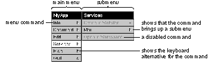
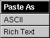
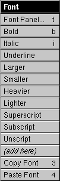

Release 3.3 Copyright ©1995 by NeXT Computer, Inc. All Rights Reserved.
| 6 |
Menus
| Menus provide users a point of entry for all the functionality of an application, its obscure and common features alike. Because of this special role, they behave in a special way: |
| All the visible menus for an application disappear when the user starts working in another application. They reappear when the user returns to the application. (Menus that weren't previously on-screen don't reappear.) | ||
| Menus are segregated into two of the frontmost tiers of on-screen windows. They appear to float above everything else on-screen except attention panels and spring-loaded windows such as pop-up lists. | ||
| Menus can't be miniaturized. They don't need to be, since they're small and can be easily retrieved after they've been closed. | ||
| Menus are hierarchically arranged. Choosing a command in one menu can produce another menu with its own list of commands. |
| The first three of these points were discussed earlier in this manual. (See "The Active Application," "Window Order," and "Miniaturizing" in Chapter 4, "The Window Interface to Applications.")
Applications should make use of the menu system's hierarchy to arrange commands in distinct, functionally identifiable menus. A well-defined set of hierarchical menus aids users both in finding the commands they need and in understanding the structure of the application. |
| How Menus Work |
|  |
| The main purpose of menus is to provide commands for the user to choose. To choose a menu command, the user presses the mouse button as the cursor points anywhere within the content area of the menu and releases it as the cursor points to the desired command. This can be as simple as clicking the command, or the user can drag through the menu, from command to command. Each command that comes under the cursor while the mouse button is down is highlighted.
Instead of using the mouse, the user can often use a keyboard alternative to choose a command. A keyboard alternative is a combination of a character and the Command key. For example, holding down the Command key and pressing the p key is the standard keyboard alternative for the Print command. Keyboard alternatives are discussed in detail in Chapter 3, "User Actions: The Keyboard and Mouse."
The Main Menu Every NEXTSTEP application has at least one menu, its main menu. If an application has just a main menu, it holds all the commands for the application. If the application has more than one menu, all but the main menu are submenus of another menu. Through the hierarchical arrangement of submenus, the main menu gives the user access to all the menus of the application. Because the main menu is at the top of the menu hierarchy, it lacks a close button and always remains on-screen when its application is active. By default, when an application first starts up, its main menu appears in the upper left corner of the screen. Users can change this default location by dragging the main menu to a new position. Another way to change the default location for all applications (except those whose main menus have already been moved) is with the Preferences application.
Bringing the Main Menu to the Cursor If the user enables one of the mouse buttons (with the Preferences application), it can be used to gain quick access to the main menu. When the user presses the enabled mouse button (except when the cursor is over an application icon), a copy of the main menu for the active application appears under the cursor. The copy stays on-screen until the mouse button is released. |
| To begin, the cursor lies directly over the main menu's title bar. The user can drag down into the menu (and into its submenus) to choose a command. When the mouse button is released, the copy and any submenus disappear.
See "Left and Right Orientation" in Chapter 3, "User Actions: The Keyboard and Mouse," for more information on enabling mouse buttons.
Submenus The main menu is the only menu in an application that isn't a submenu. Every other menu is a submenu of another menu, which is its supermenu in the application's hierarchy of menus. Each submenu is associated with a particular command in its supermenu. The submenu becomes visible and attaches to its supermenu when the user chooses the command that it's associated with. The user can drag from a controlling command into a submenu to choose one of the submenu's commands. As long as the mouse button is held down, the submenu remains visible and the controlling command stays highlighted. But once the mouse button goes up and the command has been executed, the submenu disappears. |
| Programming Note: Menus and the Application Kit
The Application Kit takes care of everything discussed in this section, "How Menus Work." Specifically, it provides the following functionality: |
| All aspects of displaying and hiding menus and menu commands (although you must specify when a command should be disabled), including tearing off submenus | ||
| Letting you associate menu commands with menus | ||
| Making sure the keyboard alternative works | ||
| Detecting when the user chooses a menu command and reacting appropriately (such as by highlighting and bringing up a panel) |
| Much of this functionality can also be accessed through Interface Builder. For example, to associate an application-specific command with a menu, the programmer can simply drag a menu command from the Palettes window into the menu. You can then change the name of the command, give it a keyboard alternative if necessary, and associate an action with the command. |
| Keeping a Submenu Attached
The easiest way to attach a submenu is simply to click its controlling command, but the user can also drag to the controlling command and release the mouse button while the cursor is still above it. The controlling command for an attached submenu stays highlighted to indicate that the submenu is attached. A supermenu and its attached submenu act like a single window. User actions that move or close the supermenu also move and close the submenu; an attached submenu has no close button of its own. A submenu attached to the main menu is assigned to the same window tier as the main menu. An attached submenu can also have its own attached submenu. This is illustrated below. The Librarian menu is attached to Services, and Services is attached to the main menu. Moving the main menu serves to move all three. |
| Tearing Off an Attached Submenu
The user can tear off an attached submenu by dragging it away from its supermenu. Moving it free of its supermenu gives it an independent life on-screen. As a sign of its independence, it gets, for the first time, its own close button. The close button identifies the menu as a torn-off submenu. (Any submenus that were attached to the torn-off submenu move with it and remain attached.) |
| The idea is for users to bring up a submenu, then tear it off and move it to a desired location if they want it to stay on-screen. Once a submenu has been torn away from its supermenu, it stays where the user puts it. To reattach the submenu, the user must close it and then choose its controlling command.
If the user presses the mouse button while the cursor is over the command that controls the torn-off submenu, a copy of the submenu temporarily appears next to its supermenu. |
| Removing a Submenu from the Screen
Assuming its application is active, an attached submenu can be removed from the screen in three ways: |
| By again choosing its controlling command. Choosing the Librarian command in the detached Services menu in the previous figure causes the Librarian submenu to disappear. | ||
| By choosing any other command in the supermenu. | ||
| By removing its supermenu from the screen. For example, when a torn-off supermenu is closed, its attached submenu disappears from the screen. |
| A torn-off submenu is removed from the screen by clicking its close button.
Commands A menu can display several different kinds of commands, all of which use the targeted-action paradigm. Some commands require the user to select the target--Copy, Paste, and Miniaturize Window, for example. Others--such as Hide, Quit, and Info--don't require a selection: The target is built into the program. When a command is chosen--whether it's clicked or activated by a keyboard alternative--it's highlighted. Keyboard alternatives can also operate commands in off-screen menus. When they do, the menu's controlling command (or, if the supermenu isn't visible, the supermenu's controlling command) is highlighted. This ensures users of immediate, visual feedback that the keyboard alternative has in fact invoked the command. Some commands control submenus. The action of the command is simply to attach the submenu to the menu. These commands are marked by the submenu symbol Many commands cause panels or standard windows to appear on-screen: |
| Some bring up a standard window--the New command in the Document menu, for example, or the Console command in the Workspace Manager Tools menu. | ||
| Some put an attention panel on-screen to help clarify or complete the command. For example, the Save As command produces a panel that asks the user to type in the file name the user wants to use for the document. | ||
| Others bring up a panel that can stand on its own, independent of the command that produced it. Sometimes the panel simply imparts information to the user--a Help panel, for example. But usually it acts as a control panel where the user can give instructions to the application--the Font and Find panels, for example. Such panels are similar to submenus in that they open a range of options to the user. |
| If a menu command controls a submenu, it remains highlighted as long as the submenu is attached. If it controls an attention panel, it remains highlighted until the panel is dismissed from the screen. Commands don't stay highlighted if they bring up a panel that isn't an attention panel.
The programmer can disable a command, as described later in this chapter in "Disabling Invalid Commands." Disabled commands have dark gray text (instead of the usual black) on the usual light gray background. They're completely inoperative and don't highlight in response to user actions. |
| Implementing Menus |
| The Application Kit provides much of the user interface to menus, leaving you the task of determining application-specific characteristics such as: |
| The menu hierarchy | ||
| The names of menu commands | ||
| When each menu command is valid | ||
| Keyboard alternatives |
| This section describes standards for the menu hierarchy and for naming menu commands. When a command isn't valid, it should be disabled, as described later in this chapter. Chapter 3 lists all the standard and recommended keyboard alternatives.
Designing the Menu Hierarchy When designing your application's menu hierarchy, you should start with the standard menus described later in this chapter--in particular, the main menu. Having standard menus, as much as possible, is one of the easiest and best ways to ensure consistency between applications. Since menus need to be easily accessible to the user, you should try to keep your application's menu hierarchy as shallow as possible. In general, a menu should be located no more than two steps away from the main menu. It's even better to have menus no more than one step away, as long as they don't grow too long or confusing as a result. |
| A menu should never have fewer than two commands unless it grows and shrinks dynamically and happens to shrink to fewer than two. If an application has a menu with only one item in it, that item should be bumped up one level and replace the command that brings up the menu. (A specific example of this is discussed later in this chapter under "The Info Menu.")
A menu can have as many submenus as it has commands, although only one at a time can be attached to the menu. A menu should appear only once in the menu hierarchy--it should not be the submenu of two menus.
Choosing Command Names Command names should be short, consisting of a single word if possible, a short phrase if not. Avoid abbreviations in commands, especially those that aren't standardized or widely used. Applications in the same language should follow the same capitalization rules. For English, commands are capitalized as they would be in a title--the first and last words begin with uppercase letters, as well as major words in between. Each command name should be unique. No two commands, even if they're in different menus, should have the same name.
Commands that Perform Actions Wherever possible, the first word of an action command should be a verb, so the command reads like a short imperative sentence for the action it performs. Examples include Hide, Open, Save As, and Revert to Saved. Some menu commands have different results, depending on the application's state. The name of such a command should change so that it always describes what the command will do. The clearest way to do this is to change the command's verb. Some examples of good names follow: |
| First State | Second State | Notes | |
| Show Ruler | Hide Ruler | ||
| Show Grid | Hide Grid | ||
| Use Grid | Ignore Grid | Don't use Grid On and Grid Off. | |
| Bold | Unbold | Bold is treated like a verb in this command. |
| Avoid using two menu commands instead of changing the menu command's name. For example, you shouldn't have a Show Ruler command followed by a Hide Ruler command, where one of the commands is always disabled.
Commands that Bring Up Panels With one exception, a command that always brings up a panel must have three dots immediately following its name (for example, "Preferences..."). The exception happens when the panel is a warning panel--such as one that comes up when the user tries to revert to a saved version of a document. Because the user could complete the action if the warning panel weren't there, it's inaccurate to imply that the command brings up a useful panel. Also, users who are new to an application sometimes tend to look at all of its panels (by choosing menu commands with "..."). You don't want to encourage users to choose commands that are so dangerous that they require warning panels. For example, the Workspace Manager Log Out command doesn't have three dots, even though it always brings up a warning panel. Do not put three dots after commands that only bring up a standard window (like the New Viewer command in the Workspace Manager, or the New command in the standard Document menu). Note: Use three periods (not the ellipsis character) to produce the three dots. If the purpose of a command is to perform an action, and the panel comes up only to help complete the action, then the command should be named for the action, not for the panel. (The panel is then given a name that reflects the command name.) In this case, use the guidelines for naming described earlier in "Commands that Perform Actions." For example, the standard Save, Save As, and Save To commands are action commands that happen to bring up a panel (which is called the Save panel). If the purpose of the command is to bring up the panel, then the command is named after the panel. This usually results in a noun phrase as a name, instead of the verb phrase that's usually used for action commands. For example, the Preferences command brings up the Preferences panel, and the Spelling command brings up the Spelling panel. A command that brings up a panel shouldn't usually have Panel in its name, since the three dots already indicate that it brings up a panel. However, you can add Panel if the command's name would otherwise be identical to another command's name. For example, when the command that brings up the Info panel is in the Info menu, the command is named Info Panel. When an application has no Info menu, the command is named just Info.
Commands that Bring Up Submenus Commands that bring up submenus usually begin with nouns, but verbs or adjectives are acceptable if they're clearer. Every submenu command in a menu should have a name that's clearly different from every other command in the menu, so that the user can guess what each submenu contains by its name. For example, it's a bad idea to have under the main menu both a Tools menu and a Utilities menu, since most users won't be able to remember which is which. If a command brings up a menu of actions, it might be appropriate to have the command name the "target" of the actions. The Document menu uses this scheme: the Open command can be read as Open Document, the New command can be read as New Document, and so on.
Commands that Bring Up Standard Windows A command that brings up a standard window should either start with New (as in the standard New command described under "The Document Menu," below) or match the title of the window. For example, the Workspace Manager has a New Viewer command under its View menu.
Sample Command Names Some sample commands follow: |
| Cut | (performs an action) | |
| Font | (attaches the Font menu) | |
| Font Panel... | (brings up the Font panel) | |
| Hide | (performs an action) | |
| Info Panel... | (brings up the Info panel; used only when Info is already used) | |
| New | (brings up a new document in a standard window) | |
| Preferences... | (brings up the Preferences panel) | |
| Save As... | (an action command that happens to bring up a panel) | |
| Select All | (performs an action) | |
| Show Graphics | (switches to Hide Graphics when graphics are already visible) |
| Disabling Invalid Commands
When a menu command won't work, it should either be disabled or bring up an explanatory panel. For example, when a text editor has no documents open, it should disable its Save and Close commands, as shown below. |
| When a disabled command is chosen using a keyboard alternative, a beep occurs. This helps the user know that the command isn't valid, even if the command isn't visible.
If an invalid command brings up an explanatory panel, the panel should explain why the command is inappropriate and offer assistance. The panel must provide more information than just that the command won't work, since that information can more directly be conveyed by disabling the command.
Graphical Devices in Menu Commands The area to the right of a command can be used only to display a keyboard alternative or a submenu symbol. (Commands that control submenus can't have keyboard alternatives.) No other graphical devices are permitted in this area. In addition, menu commands should not use arbitrary graphical devices, such as check marks, to show state. There's almost always a more appropriate way to display current state in our interface--for example, by using buttons or check boxes in a panel or by designing objects that can be directly manipulated (such as those in the Edit application's ruler). |
| Programming Note: Tools for Creating Menus
Project Builder creates your application's main menu. You can add commands and menus using Interface Builder. Some standard commands provided by Interface Builder have actions or submenus already associated with them. For example, by dragging the Windows command from the Palettes window of Interface Builder into your application's main menu, you give your application the full functionality described in "The Windows Menu," later in this chapter. |
| Standard Menus and Commands |
| There's a great deal to be gained if commands shared by most applications are arranged similarly in similar menus. This section gives the standard arrangement of menus and commands for NEXTSTEP applications.
Note: This chapter shows the U.S. English command names. For each language, the standard command names should be consistent. For example, Quit is Quitter in every French application.
The Main Menu |
| Every application should lay out its main menu as described in this section. |
| Programming Note: Implementing Commands
Many menu commands are standard, as described in this section, "Standard Menus and Commands." Many of these standard commands and much of their behavior are supplied by the Application Kit, Project Builder, and Interface Builder. The Application Kit even automatically changes the names of some commands, such as changing Bold to Unbold, and disables some commands when they're invalid, such as Heavier. (Both commands are in the Font menu, which is described later in this chapter.) However, you should double-check that each menu command works correctly. |
| The title of the main menu should be the name of the application, shortened somehow if the name is too long. For example, the main menu of Interface Builder is named IB because naming it Interface Builder would needlessly waste screen space. |
| Command | Action | |
| Info | Attaches the Info menu, which contains commands that give general information about the application, as well as let the user set general preferences about how the application works. Info is the first command in the main menu in part because it can be read in conjunction with the application name in the title bar (for example, Info about Edit, Info about Draw, and so on). See "The Info Menu," later in this chapter. | |
| Document | Attaches the Document menu, which has commands that affect a document as a whole--opening, saving, and closing, for example. This menu is named differently in different applications, so it's important that the command be in a prominent, well-defined location (second). See "The Document Menu," later in this chapter. | |
| Edit | Attaches the Edit menu, which contains commands affecting the current selection. Every application that can have editable documents or selectable text must have this menu. See "The Edit Menu," later in this chapter. | |
| Format | Attaches the Format menu, which contains commands affecting the layout of documents, including the font and paragraph format of text and the arrangement of graphic images. See "The Format Menu," later in this chapter. |
(continued)
| Command | Action | |
| Windows | Attaches the Windows menu, which contains commands affecting the windows that belong to the application. See "The Windows Menu," later in this chapter. | |
| Print... | Brings up the Print panel, which permits the user to print or fax a document. You can omit the Print command if your application doesn't print. In general, the Print command is assumed to print the document in the main window. If a panel can be printed (for example, one that contains a registration form), then to avoid confusion the panel might contain its own Print button. | |
| Services | Attaches the Services menu. This menu lets the user choose services provided by the system or by other applications. See "The Services Menu," later in this chapter. | |
| Hide | Hides all the windows of the application. See "Hiding and Retrieving Windows" in Chapter 4. | |
| Quit | Terminates the application. If quitting the application might cause the user to lose work, then the application should bring up a Quit panel. Otherwise, the application should not require confirmation of a Quit command. |
| The Info, Services, Hide, and Quit commands should be in the main menu of every application. The other commands described above should be included when appropriate.
Adding to the Main Menu The main menu works best when it's short (so that commands are easy to find) and narrow (so that it doesn't take up much screen space). Applications should generally have no more than 11 or 12 commands in the main menu. The main menu is also, for the most part, a menu of menus. Commands that are added to the main menu should typically be ones that bring up submenus. When designing your application's user interface, you can move a command that the guidelines place in a submenu up one level to the main menu, provided that: |
| The main menu is short enough to accommodate another command. | ||
| The command provides functionality that's considered central, even crucial, to the application. For example, a text editor might bring the Font command up to the main menu from the Format menu, but a spreadsheet would not. |
| Like any other command that's added to the main menu, a command that's raised from a submenu should generally control another submenu.
When a command is promoted to the main menu, it should, for continuity, be located immediately after the command for the submenu it would otherwise be in. For example, if the Font command is raised from the Format menu, it follows the Format command. If the Find command is promoted from the Edit menu, it follows the Edit command, as shown below. |
| The Info Menu |
| The Info menu contains commands that let the user get and set information about the application, as a whole. A License command is an example of the kind of command that could be added to this menu. |
| Command | Action | |
| Info Panel... | Brings up a panel that displays a small amount of basic information about the application. This standard panel is described in Chapter 5, "Panels." | |
| Show Menus | Displays and tiles all the application's menus. There's currently no support for this command in the Application Kit. You can implement it or not as you see fit. | |
| Preferences... | Brings up the application's Preferences panel, which permits the user to customize the application. This standard panel is described in Chapter 5. | |
| Help... | Brings up a panel with helpful information on how to use the application. If you implement this command, you should use the standard Help panel, which is described in Chapter 5. If you don't implement this command, then when the user Help-clicks an object in your application, the system brings up a panel informing the user that the application doesn't use the NEXTSTEP help system. |
| If an application doesn't support any of the commands in the Info menu except Info Panel, it should omit the menu and make the Info command bring up the panel instead. (The command would then be followed by three dots.)
The Document Menu |
 |
| This menu contains commands that affect a document as a whole. Commands affecting selected contents of a document are mainly in the Edit menu. Applications that don't open or save documents of some kind and don't have a New command don't have this menu.
The title of this menu (the second command in the main menu) should indicate the kind of thing that the Open command opens and the Save command saves. It might be Document, Project, File, Model (for spreadsheets), Game (for games), or Shell (for a terminal emulator). Never call this menu Window, since a Windows menu is standard in most applications. |
| Command | Action | |
| Open... | Brings up the Open panel so the user can open a file. Opening a file also opens a window (or windows) to display it in. | |
| New | Opens a new, unnamed file and a window to display it in. This new document should be in the same folder as would be displayed in the Open panel. (See the section "Using the Open Panel" in Chapter 5.) | |
| Save | Saves any changes in the document displayed in the current main window to a file (writes them to the disk). If the document has never been saved to disk, this command should have the same effect as the Save As command. | |
| Save As... | Saves the document displayed in the main window, as changed, by writing it to a new file with a name supplied by the user. The document displayed in the main window corresponds to the new file, and the window's title is changed accordingly. This command places a Save panel on-screen that asks the user to type in a file name or cancel the command. |
(continued)
| Command | Action | |
| Save To... | Saves the document displayed in the main window, as changed, by writing it to a new file with a name supplied by the user. In this respect, Save To is identical to the Save As command. However, Save To doesn't replace the window's current file with the new one. You can choose whether to implement Save As or Save To or both in your application. | |
| Save All | Saves every document that's open in the application. This is a shortcut for performing the Save command on every open document. | |
| Revert to Saved | Replaces the current version of the document displayed in the main window with the version saved on disk. This undoes any changes made to the document since it was last saved. | |
| Close | Closes the document in the main window, and all the windows used to display that document. In other words, it's completely parallel to the Open command. See "The Windows Menu," later in this chapter, for information on a related command, Close Window. |
| If an application uses more than one window to display a document, it could add a Miniaturize command to miniaturize all the windows associated with the currently selected document (the document of the key window) into a single miniwindow. A standard command already exists (Miniaturize Window in the Windows menu) to miniaturize a single window.
Performing an Implicit New Command If the user starts up an application by double-clicking an application icon rather than a document icon, the application should, if appropriate, provide the user with a new document to work in (performing an implicit New command). This is much friendlier to a new user than simply putting a menu on-screen. Users should be permitted to disable this behavior through a preference. It's almost always appropriate for general-purpose applications to perform an implicit New command. However, it's not appropriate if the application can't produce a new document without user input. It's also not appropriate if producing a new document has side effects, such as modifying the file system by creating a new folder or adding a file that might persist even if the user decided not to save the new document. When an application is started up automatically at login or from another application, it should not perform an implicit New command. If the user opens another document without touching the new one that was provided at startup, the application could automatically close the new one. But this is not a requirement of the user interface.
Uneditable Documents If a document is opened that the application won't allow the user to save (even with a Save As command), it should not permit the user to edit the document on-screen. Waiting until the user is ready to save changes is too late.
The Edit Menu |
| The Edit menu contains commands that alter the selection in the current key window (or in the main window if the key window doesn't respond to the command). Each command should be dimmed when it can't operate on the current selection. |
| Command | Action | |
| Cut | Deletes the current selection and copies it to the pasteboard. | |
| Copy | Copies the current selection to the pasteboard without deleting it. | |
| Paste | Replaces the current selection with the contents of the pasteboard. |
(continued)
| Command | Action | |
| Paste As | Attaches a submenu that permits the user to paste the current contents of the pasteboard into the document in a specified data type. The submenu lists the possible data types, as discussed in "The Paste As Menu," later in this chapter. | |
| Link | Attaches the Link menu, which contains commands for manipulating linked information. See "The Link Menu," later in this chapter. | |
| Delete | Deletes the current selection without copying it to the pasteboard (thus leaving the contents of the pasteboard intact). The Delete key has the same effect. | |
| Undo | Undoes the last editing change. This usually means all changes since the user last made a selection, including the selection of an insertion point. | |
| Find | Attaches the Find menu, which contains commands related to the Find panel. See "The Find Menu," later in this chapter. | |
| Spelling... | Brings up the Spelling panel. | |
| Check Spelling | Finds the next misspelled word without bringing up the Spelling panel. | |
| Select All | Makes the entire contents of the file the current selection. |
| Applications that permit the user to edit text or graphics should support at least the Cut, Copy, Paste, and Select All commands. It's strongly recommended that you also implement the Undo command. |
| Programming Note: The Edit Menu
To get this menu, you can just drag it in from the Palettes window of Interface Builder. It's already hooked up to the Text object, which automatically provides all the menu's functionality except for Find, Paste As, Link, and Undo. |
| The Paste As Menu |
|  |
| The Paste As menu is rarely needed because applications can take care of pasteboard data types without user intervention. However, sometimes it's useful for the user to be able to specify the format in which data is pasted. For example, the user of a page layout program might want to choose whether text is pasted as ASCII or Rich Text Format (RTF), or whether graphics are pasted as EPS or TIFF.
This menu should include only the types appropriate for its application. As usual, the programmer should disable invalid menu commands. For example, when the pasteboard contains only text data, any graphics formats should be disabled.
Checking Spelling The Spelling and Check Spelling commands in the Edit menu are intended to provide a uniform interface for checking spelling that in many ways parallels the interface for Find. (Find is discussed under "The Find Menu," below.) These commands for checking spelling are supported by the Application Kit's Text object; custom objects will need custom code for checking spelling. The Spelling command brings up the Spelling panel, which is described in Chapter 5. The Check Spelling command is equivalent to the button on the panel that searches for and selects the next misspelled word in the main window. It permits the user to find the next misspelled word without bringing up the panel. If the application can't find the next misspelled word until the user takes some action within the Spelling panel (for example, loads a dictionary), Check Spelling brings up the panel. (This is parallel behavior to Save bringing up a panel when the user must first supply a file name, or Find Next bringing up the Find panel if the user needs to enter a text string to search for.) If an application has spelling options that can't be accommodated in a panel, Spelling and Check Spelling should be replaced by a Spelling command that brings up a submenu. That menu might then have Spelling Panel and Check Spelling commands.
The Link Menu |
| The Link menu provides a standard interface for receiving and supplying linked information. Linked information is copied information, such as a graphic image, that can be automatically updated when the original information is modified. See the User's Guide for more information on working with links. |
| Command | Action | |
| Paste and Link | If the last Copy operation was performed in an application that can supply linked information, this command pastes the contents of the pasteboard and links it to the original information. | |
| Paste Link Button | If the last Copy operation was performed in an application that can supply links, this command pastes a button that, when clicked, opens the document that contains the original information. Link buttons are discussed in Chapter 7, "Controls." | |
| Publish Selection | Creates a link file. When the link file is dragged into documents that can receive linked information, the end result is as if a Paste and Link command had been done. This command places a panel on-screen that asks the user to type in a file name or cancel the command. | |
| Show Links | Highlights or unhighlights all linked information in the current document. The name of this command must alternate between Show Links and Hide Links, depending on the state of the document. | |
| Link Inspector | Brings up the Link Inspector panel, which is discussed in Chapter 5. |
| An application that can receive linked information (one that implements one or both of the Paste and Link and Paste Link Button commands) should also implement Show Links and Link Inspector.
When the user chooses the Show Links command, the application should highlight all the linked information in the main window, as shown in the following figure. In the window shown below, the picture at the lower left is the only visible linked information, so it's the only picture that's highlighted with a chain pattern. |
|
|
| Programming Note: Implementing Links
The Application Kit supports links with its NXDataLinkManager and NXDataLink classes. See the NEXTSTEP General Reference (available through Digital Librarian) for detailed information on how to make your application receive and supply links. |
| The Find Menu |
| Applications that display large amounts of text are encouraged to include a Find menu like the one illustrated above. Other applications might also find this menu useful, but because it's designed most specifically for text, a variation of it might better meet their needs. |
| Command | Action | |
| Find Panel... | Brings up the Find panel, makes it the key window, and selects everything in the text field labeled Find so that the user can easily enter new text. If the panel is already on-screen, the command brings it to the front, makes it the key window, and selects the Find field. | |
| Find Next | Searches forwards for the next occurrence of the string in the panel's Find field. | |
| Find Previous | Searches backwards for the previous occurrence of the string in the panel's Find field. | |
| Enter Selection | Enters the current selection into the panel's Find field so that Find Next and Find Previous can search for it. | |
| Jump to Selection | Scrolls to display the beginning of the current selection. |
| Find Next and Find Previous begin searching at the current selection. If the search is successful, the text that's found is selected and becomes the starting point for the subsequent search. Neither command requires the Find panel to be on-screen. However, if the panel's Find field is empty, Find Next and Find Previous both bring up the Find panel, make it the key window, and select its Find field. This is exactly what the Find Panel command does. These other commands do it as a convenience to the user, who has indicated an intention to do a search.
The Find panel is further described in Chapter 5.
The Format Menu |
| Command | Action | |
| Font | Brings up the Font menu, which has commands to alter the font of the current selection. (See "The Font Menu," later in this chapter.) | |
| Text | Attaches the Text menu, which lets the user choose the format of the selected blocks of text. (See "The Text Menu," later in this chapter.) | |
| Page Layout... | Brings up the Page Layout panel, which lets users determine how documents are to be printed and displayed on the screen. |
| The Format menu should hold the principal formatting commands needed by users of the application. For applications that deal mainly in numbers, they may be commands that format the text display of floating-point numbers or the graphical display of numeric data. For text processors, they may include the commands that would otherwise go into the Text menu, plus others.
If an application promotes the Font command to the main menu and has no other commands to add to the Format menu, the Format menu would become little more than a container for the Text menu. In this circumstance, the commands that would otherwise go in the Text menu should be placed directly in the Format menu. A separate Text menu is needed only when there's reason to isolate these commands from other formatting commands or to shorten what would otherwise be an excessively long Format menu. When commands from the Text menu are placed in the Format menu, they should follow the Page Layout command, so that the Copy Ruler and Paste Ruler commands end the menu.
The Font Menu |
|  |
| Applications that support text entry and editing should provide a Font menu and Font panel. The Font panel is described in Chapter 5. It contains controls that let users set and preview fonts. The Font menu has a command to bring up the panel, and commands to make common adjustments to a font.
Each command alters one aspect of the font, such as its size or style, while leaving other aspects intact. The Font menu and Font panel target currently selected text. The Preferences panel should be used to alter the default font. |
| Command | Action | |
| Font Panel... | Brings up the Font panel. | |
| Bold | Makes the current selection bold, if it's not bold already, and makes it unbold if it is. The name of the command must alternate between Bold and Unbold depending on the selection. | |
| Italic | Makes the current selection italic or oblique, if it isn't already, and makes it unitalic if it is. The name of the command must alternate between Italic and Unitalic depending on the selection. |
(continued)
| Command | Action | |
| Underline | Underlines the current selection, if it isn't already underlined, and removes the underlining if it is. When the current selection is already underlined, the command name must change to Ununderline. | |
| Larger | Makes the current selection one point larger. | |
| Smaller | Makes the current selection one point smaller. | |
| Heavier | Uses a heavier typeface to display the current selection. | |
| Lighter | Uses a lighter typeface to display the current selection. | |
| Superscript | Moves the currently selected text up an appropriate amount for a superscript. Choosing the command again moves the text that much higher. | |
| Subscript | Moves the currently selected text down an appropriate amount for a subscript. Choosing the command again moves the text that much lower. | |
| Unscript | Returns the selected superscripted or subscripted text to the normal baseline of the text. | |
| Copy Font | Copies from the current selection all the text attributes listed in this menu, including font family, font size, bold, italic, underlining, superscript, and subscript. | |
| Paste Font | Alters the current selection so that it has all the font attributes previously copied with the Copy Font command. |
| Programming Note: The Font Menu
By dragging this menu in from Interface Builder's Palettes window, you get this menu and its functionality from the Text object with almost no additional work. Still, you should make sure that every command works, dims, and changes it name as it should. |
| Note: If the current selection is an insertion point, all the commands in the Font menu affect the next set of characters inserted, rather than any existing text, unless the text area can contain only one font. If an area of text can have only one font, then the Font menu and panel change the font of all the text in the area.
The only required commands in the Font menu are Font Panel, Copy Font, and Paste Font, although frequently used commands like Bold and Italic should almost always be present. Applications that are not text intensive may decide to omit some of the less frequently used commands, such as Heavier and Lighter. Each command leaves the other font attributes intact. For example, Bold will change 11-point Times Roman to 11-point Times Bold and 24-point Courier Oblique to 24-point Courier Bold Oblique. If there's more than one font in the selection, Larger and Smaller change each to be one point larger or smaller than its current size. The other commands make only the change that's appropriate for the first character in the selection. For example, if the first character in a multifont selection is italic, the Unitalic command will remove the italic trait from all the text in the selection, but won't change any text that isn't italic. If the first character isn't italic, the same command (but now called Italic) will italicize the entire selection, but won't alter any text that's already italic. The Colors command, which brings up the Colors panel, often appears in the Font menu. However, it can appear elsewhere; each application should place the Colors command in a menu that indicates the kind of objects the Colors panel can affect. In Mail and Edit, colors can be applied only to characters (and not to their background), so the Colors command is in the Font menu.
The Text Menu |
 |
| The Text menu is a collection of formatting commands that affect text. All the Text menu commands are supported by the Application Kit's Text object. These commands can be isolated into a Text submenu, as shown here, or be included directly in the Format menu. If you have other formatting commands that are more important to your application, those commands, rather than these, should go in the Format menu. |
| Command | Action | |
| Align Left | Aligns the text at the left margin, leaving a ragged right margin. | |
| Center | Centers the text between the left and right margins. | |
| Align Right | Aligns the text at the right margin, leaving a ragged left margin. | |
| Justify | Aligns the text at both the left and right margins. | |
| Show Ruler | Displays a ruler in the text area, if the ruler isn't currently visible. Otherwise, this command hides the ruler. The name must alternate between Show Ruler and Hide Ruler, depending on the state of the text area. The ruler is a scale containing controls that affect the format of a paragraph (such as margins and tabs). | |
| Copy Ruler | Copies the ruler settings in the first paragraph of the selected text. | |
| Paste Ruler | Alters the paragraphs containing the text selection to have the settings most recently copied with the Copy Ruler command. |
| An application that has many other text-related commands, such as a word processor, can arrange all its text-formatting commands within the Format menu, as best fits its needs. (See also the discussion of the Format menu earlier.) However, for consistency, all applications should, as far as possible, retain the command names shown above for the Text menu, no matter how the commands are arranged.
The Windows Menu |
| The Windows menu contains commands affecting the windows that belong to the application. You can replace this menu with one more suitable for your application. For example, an application that has multiple windows per document might have its own tools to organize the windows. |
| Command | Action | |
| Arrange in Front | Stacks and offsets all the application's document windows (those that can become the main window and are created using Open and New commands) at the front of the screen. While this command is recommended, it isn't mandatory. | |
| Miniaturize Window | Miniaturizes the key window (if it has a miniaturize button). The affected window need not be a document window. | |
| Close Window | Closes the key window (if it has a close button). If the window is the last one (or only one) open displaying a document, it also closes the document, just as the Close command would. (See "The Document Menu," earlier, for a description of the Close command.) |
| The commands in this menu bring windows to the front of the screen and, in the case of the last two commands, remove them. Other kinds of commands, even if they affect windows in some way, should be located elsewhere in the menu hierarchy.
You can replace Arrange in Front with an Arrange command that brings up a panel or menu giving the user more choices concerning which windows to arrange and how they should be tiled or stacked. |
| Programming Note: The Windows Menu
This menu and all of its functionality are provided for you. All you have to do is drag the Windows command into your main menu from the Palettes window of Interface Builder. |
| The commands inserted below Arrange in Front list document windows. Each command brings one window to the front and, if possible, makes it the key window. The Application Kit creates this list and dynamically adds a command for each document window when it's opened. An example of these dynamically created commands is below. Because the Application Kit creates the command names from the title bar of each window, improperly titled windows can lead to the Windows menu becoming confusing or too wide. Window titles are discussed in "Choosing a Title" in Chapter 4. |
| The Services Menu |
| This required menu contains commands that invoke services provided by the system or by other applications. All the commands in the menu are placed there by the Application Kit from information furnished by service providers (so there's no need to specify where commands should be added).
Providing Services Applications can specify how commands that request their services should be worded. The following guidelines apply: |
| Each command should begin with a verb and should name the application that will respond to the request. If the name of the application can be interpreted as a verb, it can be the first word of a command phrase (for example, Chart Selection for an application named Chart). Otherwise, the verb that begins the command should be followed by a preposition and the name of the responding application (Open from Workspace, Define in Webster). | ||
| If an application responds to more than one service request, it can arrange the commands in a submenu under the application's name. Commands in the submenu don't have to name the application, but should, like all other commands, begin with a verb. | ||
| However, if the application name is commonly interpreted as a verb, the submenu commands can consist of words that would meaningfully follow the application name in a phrase, much as the commands in the Paste As menu. For example: |
| Service requests conditionally activate the other application, but only if user input might be required. For example, Digital Webster is likely to require the user to scroll the display, but the Workspace Manager doesn't need the user's help to get a file opened. The application that opens the file will become active, but the Workspace Manager won't. |
| Programming Note: The Services Menu
To take advantage of services provided by other applications, you should first drag the Services menu from the Palettes window of Interface Builder. Then, if you use the Text object in your application, your application automatically gets many services. Your application can get more kinds of services if you write a few lines of code. To put its services into other applications, your application advertises its services in a section of its executable file or in its file package. (File packages are special folders that look and behave like files.) These services are automatically included in the menus of any applications that can accept them. |
| Adding a Tools Menu
Since it's easiest for users to find a command if it's arranged in a submenu with other functionally related commands, commands that bring up panels and special, nondocument windows should be located throughout the menu hierarchy as appropriate. For example, the Font Panel command is in the Font menu, the Open command is in the Document menu, and Page Layout is in the Format menu. However, if a window or panel is an independent tool that encapsulates a functional domain all its own, it may be difficult to group it with other commands. Examples are the palettes in a graphics program, the Inspector in Interface Builder, and the Console in the Workspace Manager. If your application has two or more such commands, you should consider collecting them together in a Tools menu. An example from the Workspace Manager is illustrated below. |
| However, the Tools menu should not be considered a default location for commands that bring up windows or panels. If a window or panel isn't perceived to be a tool, its command should go elsewhere. If a command can be functionally grouped, it should be. |